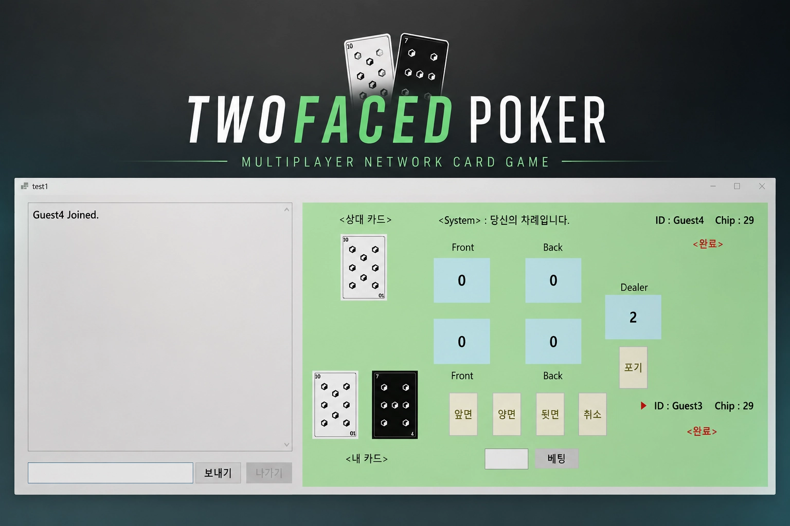
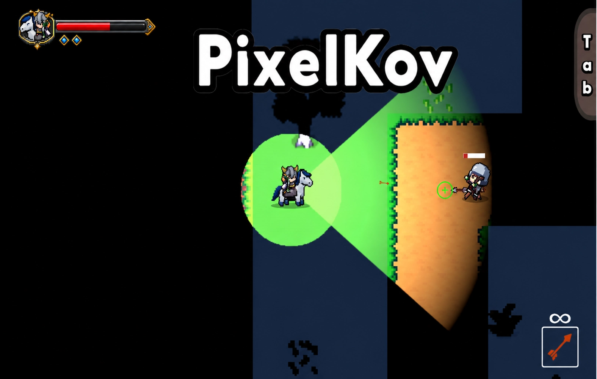

웹 백엔드에서 배운 것
인증·인가 시스템을 개발하며 데이터의 전체 흐름을 이해하고 문제의 근본 원인을 추적하는 접근법을 익혔습니다.
Game Programmer · Server & Client
게임은 서로 다른 사람들이 같은 경험과 감정을 공유하게 만드는 매체라고 생각합니다. 플레이어의 행동, 클라이언트, 서버, 데이터가 정확히 연결되는 시스템을 만들어 그 경험을 안정적으로 구현하고 싶습니다.
Keycloak·Spring Security 기반 3개 WAS OAuth2/JWT 인증과 권한 매핑, Linux PAM·Python Agent 통합 인증, Script 정책 API 및 Master–Slave DB 동기화를 개발했습니다.
Career · Growth
웹 백엔드에서 익힌 데이터 흐름과 문제 추적 경험을 게임 개발로 확장했습니다.
인증·인가 시스템을 개발하며 데이터의 전체 흐름을 이해하고 문제의 근본 원인을 추적하는 접근법을 익혔습니다.
Unity 게임 개발 캠프에서 PixelKov와 IDLEAdventure를 제작하며 C#·Unity 기반 게임 시스템 개발과 팀 협업을 경험했습니다.
클라이언트·서버·데이터의 연결이 안정적인 플레이어 경험의 기반이라는 점을 프로젝트를 통해 배웠습니다.
TmaxGPMS 연구 및 개발
인증·인가와 운영 자동화 기능을 개발하며 운영 환경에서 데이터 흐름과 예외 상황을 고려했습니다.
2022.02 — 2023.04 · 1년 2개월
구름 OS 기반 PC 중앙관리 솔루션인 TmaxGPMS 개발에 참여했습니다.Keycloak, Spring Security, Linux PAM, Python Agent를 연동한 통합 인증 기능과 관리자용 정책 기능, 배포·운영 자동화를 담당했습니다.
주요 교육 내용
C# 기초·응용과 Unity, Git을 학습하고 개인 프로젝트 1회와 팀 프로젝트 2회를 진행했습니다.
구현 내용
성과
7기 명예의 전당 1위
동일 기수 내 출결 및 일일 과제 수행 경험치 기준
Selected Work
게임의 핵심 기능을 구현하고, 서버·클라이언트·게임 시스템 사이의 상태와 데이터 흐름을 설계했습니다.

2인용 온라인 카드 게임
주요 구현 내용

2D PvE Extraction Shooting Game
주요 구현 내용
ScriptableObject 레시피 기반 제작 조건 검증 및 최대 제작 가능 수량 계산
방치형 RPG 프로젝트
주요 구현 내용
Snapshot 기반 비동기 통합 저장 및 데이터 정합성 관리InstanceId 기반 개별 장비·인벤토리 시스템Problem Solving · Direction
동작하는 코드에서 멈추지 않고 통신의 신뢰성과 데이터 일관성을 함께 살폈습니다.
TCP의 recv() 한 번이 하나의 메시지를 보장하지 않아 베팅·턴 이벤트가 잘못 처리되는 문제를 확인했습니다.
4바이트 길이 헤더와 RecvAll()·SendAll()을 적용하고, 연결별 송신 큐와 Sender Thread로 송신 순서를 통제했습니다.
저장 로직을 SaveManager 한 곳에서 관리하던 구조를 ISaveDataWriter 기반으로 분리했습니다.
GameSaveDataSnapshot을 생성해 중첩 컬렉션까지 독립적으로 복사하고, 백그라운드 직렬화 중 원본 데이터가 변하지 않도록 했습니다.
Collaboration · Future
팀원의 자율성을 존중하면서도 전체 진행 상황을 파악하고 필요한 순간에 조율합니다. 일정이 지연될 때는 씬 연결과 시스템 통합을 직접 맡아 프로젝트의 완성을 도왔습니다.
입사 후에는 코드 구조와 게임 플레이 흐름, 클라이언트와 서버 사이의 데이터 전달 과정을 빠르게 파악하고 작은 기능 수정과 버그 해결부터 정확하게 수행하겠습니다.
플레이어의 행동이 오류 없이 게임의 결과로 이어지도록, 보이지 않는 곳에서 게임의 안정성을 책임지겠습니다.
플레이어 행동부터 저장 데이터까지 흐름을 추적합니다.
라이브러리의 보장 범위와 애플리케이션의 책임을 구분합니다.
필요한 순간에는 구현 범위를 넓혀 결과의 완성까지 책임집니다.
해결한 문제와 설계 의도를 팀과 공유합니다.